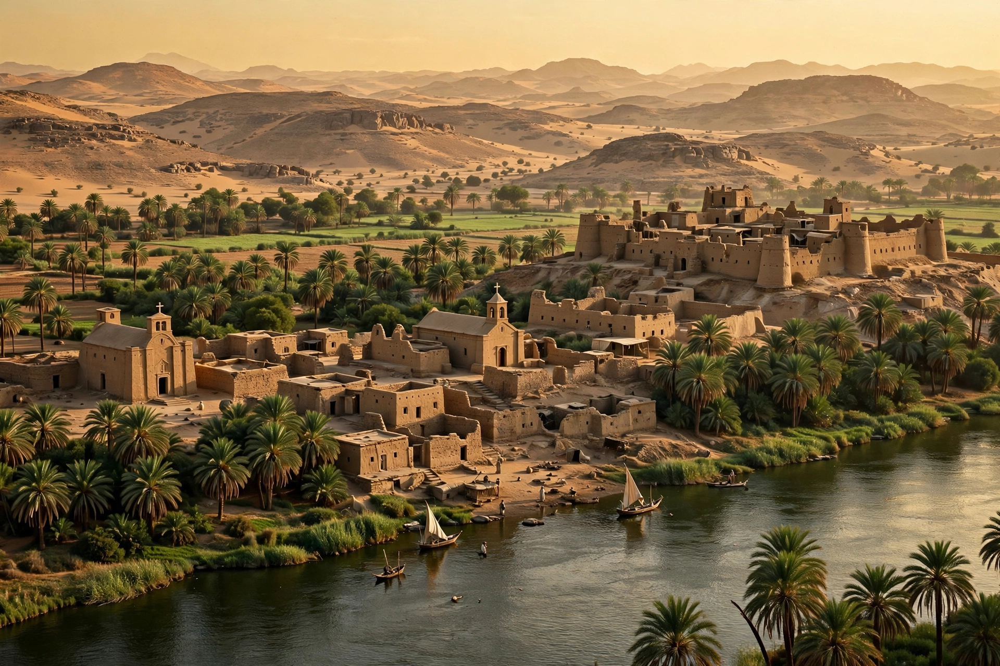

Makuria (Old Nubian: Ⲙⲁⲕⲟⲩⲣⲓⲁ, Makouria; Arabic: المقرة, al-Muqurra) was a medieval Christian kingdom located in what is today northern Sudan and southern Egypt. It was one of three Nubian kingdoms that emerged after the fall of Meroë, alongside Nobatia and Alodia.

| Capital | Dongola |
|---|---|
| Common languages | Old Nubian, Greek, Coptic, Arabic |
| Religion | Coptic Christianity, later Islam spread |
| Government | Monarchy |
| Established | 5th–6th century |
| Disestablished | 14th–16th century |
Originally covering the region between the Third and Fifth Cataracts of the Nile, Makuria expanded after absorbing Nobatia in the 7th century. Its capital was Dongola. The kingdom reached its zenith in the 9th to 11th centuries, building cathedrals, monasteries, and painted churches, notably at Faras.
In 651–652 an Arab army invaded but was repelled, leading to the Baqt, a treaty regulating relations between Makuria and Muslim Egypt for some six centuries — an unusually long-lived agreement.
From the 13th century Makuria faced Mamluk invasions, internal succession disputes, and Arab migration. Dongola was taken in the 14th century, and the kingdom fragmented, though a rump Makurian state survived into the 16th century.
Makuria was officially Christian, affiliated with the Coptic Patriarchate of Alexandria. Old Nubian was written in a modified Coptic alphabet and used for legal and religious texts. Wall paintings from Faras Cathedral are among the finest survivals of medieval Nubian art.